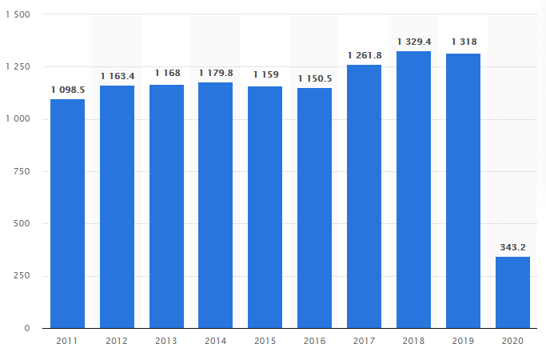

Night Safari Visitors
Problem Statement
In 2020, the world's first nocturnal zoo, the Night Safari in Singapore, attracted approximately 343
thousand visitors. The Night Safari is part of the four wildlife-centered leisure attractions in
Singapore, which includes the:
- Singapore Zoo
- Jurong Birdpark
- River Safari
Due to the COVID-19 pandemic, the Night Safari was closed from April to June 2020, and has since
then operated at limited capacity under safety measures.
The following table shows the number of visitors to Night Safari from 2011 to 2020.
| Year |
No. of visitors (in thousands) |
| 2011 |
1098.5 |
| 2012 |
1163.4 |
| 2013 |
1168 |
| 2014 |
1179.8 |
| 2015 |
1159 |
| 2016 |
1150.5 |
| 2017 |
1261.8 |
| 2018 |
1329.4 |
| 2019 |
1318 |
| 2020 |
343.2 |
Visualisation

© cringe
Web Programming Workshop